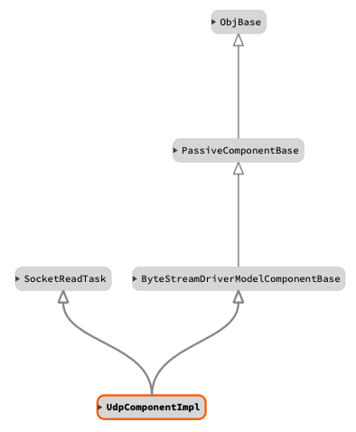

|
F´ Flight Software - C/C++ Documentation
Latest
A framework for building embedded system applications to NASA flight quality standards.
|
|
F´ Flight Software - C/C++ Documentation
Latest
A framework for building embedded system applications to NASA flight quality standards.
|
The UDP client component bridges the byte stream driver model interface to a remote UDP port to which this udp component sends/receives bytes. It implements the callback formation (shown below) using a thread to receive data and producing the callback port call. Udp does not require bidirectional operation and can be used in a single direction.
For more information on the supporting UDP implementation see: Drv::UdpSocket. For more information on the ByteStreamModelDriver see: Drv::ByteStreamDriverModel.
The manager component (typically the ground interface) initiates the transfer of send data by calling the "send" port. The caller will provide a Fw::Buffer containing the data to send and the port call will return a status of that send. These responses are an enumeration whose values are described in the following table:
| Value | Description |
|---|---|
| Drv::SEND_OK | Send functioned normally. |
| Drv::SEND_RETRY | Send should be retried, but a subsequent send should return SEND_OK. |
| Drv::SEND_ERROR | Send produced an error, future sends likely to fail. |
This data is immediately sent out to the remote tcp server with a configured send timeout. See Usage described below.
Callback Formation

In the callback formation, the byte stream driver component initiates the transfer of received data by calling the "readCallback" output port. This port transfers any read data in a Fw::Buffer along with a status for the receive. This status is an enumeration whose values are described in the following table:
| Value | Description |
|---|---|
| Drv::RECV_OK | Receive functioned normally buffer contains valid data. |
| Drv::RECV_ERROR | Receive produced an error and buffer contains no valid data. |
The Drv::TcpClientComponentImpl must be configured with the address of the remote connection, and the socket must be open to begin. Usually, the user runs the Drv::TcpClientComponentImpl engaging its read thread, which will automatically open the connection. The component is passive and has no commands meaning users should init, configureSend/configureRecv, and startSocketTask. Upon shutdown, the stopSocketThread and joinSocketThread methods should be called to ensure proper resource deallocation. This typical usage is shown in the C++ snippet below.
Since UDP support single or bidirectional communication, configuring each direction is cone separately using the two methods configureSend and configureRecv. The user is not required to call both.

| Name | Description | Validation |
|---|---|---|
| UDP-COMP-001 | The udp component shall implement the ByteStreamDriverModel | inspection |
| UDP-COMP-002 | The udp component shall provide a read thread | unit test |
| UDP-COMP-003 | The udp component shall provide single and bidirectional communication across udp | unit test |
| Date | Description |
|---|---|
| 2020-12-21 | Initial Draft |
| 2021-01-28 | Updated |